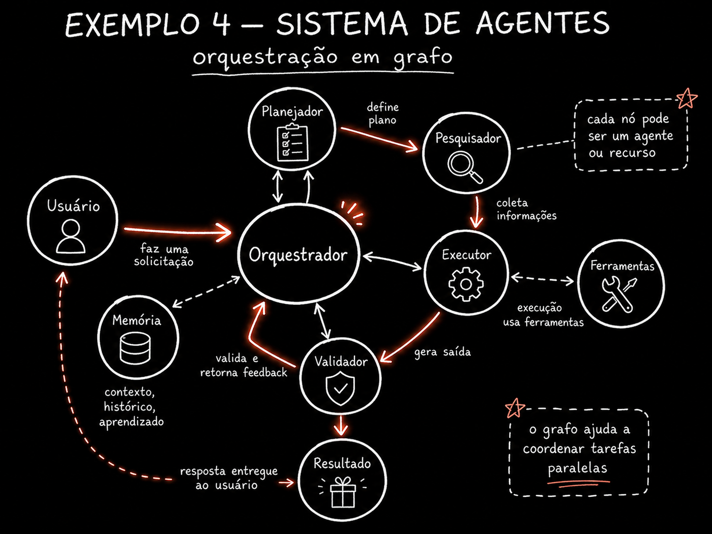

🧱 Trate o no como unidade de trabalho
Um no pode ser um agente de IA, uma chamada de modelo, um pedaco de codigo comum ou ate uma decisao humana no meio do fluxo. A pergunta que voce precisa fazer antes de desenhar qualquer no e simples: isso aqui precisa de IA de verdade? Nem sempre a resposta e sim.
Um no deterministico — um if, uma query num
banco, um script que so formata dados — e mais barato, mais rapido e mais confiavel do que jogar tudo pro modelo.
A regra que a industria convergiu: codigo controla o roteamento previsivel, modelo cuida do que exige
interpretacao ou julgamento.
🆕 Novo aqui? Duas palavras antes de seguir
- No deterministico: um passo que sempre produz o mesmo resultado pra mesma entrada — sem modelo de IA no meio. Um
if valor > 100e deterministico. - Orquestrador: o no (ou agente) que decide pra quem mandar o trabalho a seguir — o "gerente" do grafo, nao quem executa a tarefa em si.
O que olhar: as cinco caixinhas ciano dentro do no. Cada uma delas pode ser diferente em cada no do seu grafo — e por isso elas ficam dentro da caixa, nao espalhadas pelo sistema. As duas setas de saida ja mostram o que o topico 2 vai destrinchar: e la, na aresta, que a condicao mora.
✓ Bom candidato a no deterministico
- ✓Validar formato de e-mail — regex resolve, sem julgamento
- ✓Consultar saldo numa API — chamada direta, resposta exata
- ✓Rotear por categoria ja marcada no banco — um
switch
✗ Precisa mesmo de modelo
- ✗Julgar se um texto e ofensivo — exige interpretacao de contexto
- ✗Resumir um documento longo em linguagem natural
- ✗Decidir qual das tres respostas ambiguas o cliente quis dizer
Conceitos-chave
Agente, codigo, humano ou modelo
Mais barato e mais confiavel
Modelo julga
Regra pratica da industria
🔀 Ponha a decisao na aresta
Uma aresta condicional — a que carrega um "se" — e onde mora o roteamento: "se aprovado siga, se reprovado volte". Isso e exatamente o que separa um grafo de uma fila. Se todas as suas arestas sao incondicionais (sempre vao pro mesmo lugar seguinte), voce nao escreveu um grafo — escreveu um pipeline disfarcado.
💡 Teste rapido: seu fluxo e grafo ou pipeline?
Olhe cada aresta do seu desenho e pergunte: "essa linha so existe porque uma condicao especifica foi satisfeita, ou ela sempre vai ser seguida?". Se a resposta for sempre "sempre segue", voce tem uma sequencia — util, mas nao e um grafo de verdade.
- •Pipeline: passo 1 → passo 2 → passo 3, sempre nessa ordem, sem excecao
- •Grafo: passo 1 → (se X) passo 2, (se Y) passo 3, (se nem X nem Y) volta pro passo 1
O que olhar: as duas setas saindo do validador vao pra lugares diferentes, dependendo de uma condicao. E essa bifurcacao — nao a quantidade de nos — que faz esse desenho ser um grafo. Se so existisse a seta verde, seria so um pipeline de tres passos.
Conceitos-chave
Carrega um "se"
Mora na aresta, nao no no
Sequencia sem condicao
"Essa aresta sempre segue?"
📦 Defina o estado que viaja
O que exatamente passa de um no pro outro? Essa pergunta parece pequena, mas define metade do sucesso do seu grafo. O state schema — o formato acordado do que viaja pelas arestas — e um contrato, e contrato se escreve, nao se improvisa.
Passar a conversa inteira de um no pro outro parece seguro, mas anula o ganho de contexto limpo: o proximo no volta a ver como o trabalho foi feito, nao so o que foi produzido — e isso enche o contexto dele de ruido. Passar de menos faz o no seguinte trabalhar as cegas, sem o dado que ele precisava.
Passar demais: a conversa inteira
Historico completo de mensagens, raciocinio intermediario, tentativas anteriores.
O proximo no gasta tokens lendo o "como" quando so precisava do "o que". Contexto sujo, custo maior.
Passar de menos: so um texto solto
Um campo "resultado" sem status, sem origem, sem metadado de confianca.
O no seguinte nao sabe se aquilo passou por validacao, quem gerou, ou se pode confiar. Trabalha as cegas.
O meio-termo: state schema explicito
Campos nomeados, com tipo e dono: resultado, status, origem.
Cada no le so os campos que precisa e escreve os campos que e responsavel por preencher. Isso e um contrato.
💡 Dica pratica
Escreva o state schema antes de escrever o primeiro no. Se voce nao consegue listar os campos que vao viajar, ainda nao entendeu o fluxo o suficiente pra codar — e vai acabar jogando a conversa inteira porque e mais facil do que pensar.
Conceitos-chave
Formato acordado do estado
Se escreve, nao se improvisa
Anula contexto limpo
No trabalha as cegas
⚙️ Configure cada no separadamente
Modelo, ferramentas, permissoes, instrucoes e teto de custo (o limite maximo que aquele no pode gastar antes de ser interrompido) podem ser diferentes em cada no. Modelo forte no passo dificil e barato no facil; ferramenta de escrita so no no que escreve; acesso a internet so em quem pesquisa.
Essa configuracao por no e o que da valor economico real ao grafo — e onde o custo cai de verdade. Um sistema que usa o mesmo modelo caro em todo passo, so porque "e mais simples configurar uma vez", esta queimando dinheiro em passos que um modelo barato resolveria igual.

📊 O que configurar, no a no
- Modelo — o forte (mais caro) so onde a decisao e dificil de verdade
- Ferramentas — escrita, execucao de codigo, internet: liberado so pra quem precisa
- Permissoes — quem pode alterar dado sensivel, quem so le
- Teto de custo — limite de tokens/dolar por no, pra nenhum passo estourar o orcamento sozinho
Conceitos-chave
Limite maximo por no
Nao uma config global
E onde o custo cai
So quem precisa recebe
🚫 Fuja do grafo degenerado
Um grafo de um no so, com todas as ferramentas e todas as instrucoes, girando ate acabar: isso e loop reinventado, e a estrutura de grafo nao esta fazendo nada por voce. Voce pagou a complexidade de "pensar em grafo" e nao colheu nenhum dos beneficios — configuracao por no, custo diferenciado, roteamento condicional.
Teste pratico: se voce nao consegue dar configuracoes diferentes a dois nos do seu desenho, provavelmente voce nao precisava de dois nos. Junte-os. Um grafo degenerado desse tipo nao e "errado" — ele so nao e um grafo, e um loop com um desenho bonito por cima.
O que olhar: a equacao nao tem "menos loop" em lugar nenhum — ela tem loop mais loop mais um ingrediente novo, o estado explicito que viaja entre eles (o que voce viu no topico 3). Um grafo de um no so, sem essa composicao, e so um loop se fingindo de grafo.
⚠️ Atencao: complexidade sem beneficio
Se voce desenhou cinco nos mas todos usam o mesmo modelo, as mesmas ferramentas, e nenhuma aresta tem condicao, voce nao ganhou nada com o desenho — so pagou o custo de manter cinco arquivos de configuracao em vez de um. Simplifique de volta pra um loop, ou adicione a diferenciacao que faltava.
Conceitos-chave
Um no, tudo liberado
Configs diferentes ou junte
Grafo = loops + estado
Grafo nao mata o loop
📏 Escolha a granularidade certa (e escreva seu grafo.json)
No grande demais e o grafo nao ajuda em nada — voce voltou pra caixa preta de um orquestrador unico fazendo tudo. No pequeno demais e voce paga sobrecarga de coordenacao em cima de trabalho trivial — mais arestas, mais estado pra passar, mais chance de erro, pra ganho nenhum.
Regra pratica: um no por mudanca de contexto, de ferramenta ou de responsabilidade. Se dois passos usam o mesmo contexto e as mesmas ferramentas, provavelmente sao um no so. Se um passo muda de "escrever" pra "validar", isso e mudanca de responsabilidade — dois nos.
✓ Separe em dois nos quando
- ✓Um passo escreve, o outro valida — responsabilidades diferentes
- ✓Um usa modelo caro, o outro so precisa de um script
- ✓Um precisa de acesso a internet, o outro nao pode ter
✗ Junte num no so quando
- ✗Os dois passos usam exatamente o mesmo modelo e ferramentas
- ✗Voce so separou pra "deixar organizado", sem diferenca real
- ✗A aresta entre eles nunca teve condicao nenhuma
🧪 Exemplo pratico: grafo.json com configuracao por no
Objetivo: evoluir o esqueleto de grafo introduzido no modulo 1.3, agora com config por no (modelo, ferramentas, teto de custo) e arestas com condicao quando. Copie, cole num arquivo grafo.json, e leia com qualquer script.
{
"nos": {
"escritor": {
"modelo": "<modelo-medio>",
"ferramentas": ["escrever_arquivo"],
"teto_custo_usd": 0.05
},
"validador": {
"modelo": "<modelo-forte>",
"ferramentas": [],
"teto_custo_usd": 0.02
},
"formatador": {
"modelo": null,
"ferramentas": ["script_deterministico"],
"teto_custo_usd": 0.00
}
},
"arestas": [
{ "de": "escritor", "para": "validador", "quando": "sempre" },
{ "de": "validador", "para": "formatador", "quando": "resultado_valido == true" },
{ "de": "validador", "para": "escritor", "quando": "resultado_valido == false" }
]
}
Como verificar: confira que
escritor e validador tem modelos
diferentes ({'<'}modelo-medio{'>'} vs {'<'}modelo-forte{'>'}) e que formatador
nem usa modelo — e um no deterministico puro. Se dois dos seus nos tivessem a mesma config, o teste do topico 5
se aplica: junte-os, voce nao precisava de dois.
Agora troque pelo seu: substitua
<modelo-medio> e <modelo-forte>
pelos nomes reais dos seus modelos, e as condicoes em quando pelas regras
de negocio do seu fluxo. Se sobrar um no sem nenhuma condicao de saida diferente dos outros, revise a granularidade.
Checagem rapida (nao bloqueia nada): voce tem dois nos que usam o mesmo modelo, as mesmas ferramentas e a mesma aresta de saida incondicional. O que fazer?
Conceitos-chave
Nem grande, nem microscopico
Um no por mudanca de contexto
Condicao explicita na aresta
Modelo, ferramentas, teto
📌 Resumo do Modulo
Proximo Modulo:
4.2 — Org graph x work graph: como o grafo de agentes reflete (ou nao) o grafo de pessoas da sua empresa.